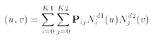
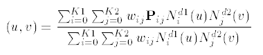

A b_spline_surface is a general form of rational or polynomial parametric surface which is represented by control points, basis functions, and possibly, weights. As with the corresponding curve entity it has some special subtypes where some of the data can be derived.
- The symbology used here is:
K1 = upper_index_on_u_control_points K2 = upper_index_on_v_control_points Pij = control_points wij = weights d1 = u_degree d2 = v_degree - The control points are ordered as
P00, P01, P02, ......, PK1(K2-1), PK1K2
The weights, in the case of the rational subtype, are ordered similarly.
- For each parameter, s = u or v, if k is the upper
index on the control points and d is the degree for s, the knot array is an array of (k +
d + 2) real numbers [s-d, ...., sk+1], such that for all indices j in
[-d, k]; sj ≤ sj+1. This array is
obtained from the appropriate u_knots or v_knots list by repeating each multiple knot according to the
multiplicity.
Nid, the ith normalised B-spline basis function of degree d, is defined on the subset [si-d, ...., si+1] of this array.
- Let L denote the number of distinct values amongst the knots in the knot list;
L will be referred to as the ‘upper index on knots’. Let mj denote
the multiplicity (i.e., number of repetitions) of the jth distinct knot value. Then:
All knot multiplicities except the first and the last shall be in the range 1, ...., d; the first and last may have a maximum value of d+1. In evaluating the basis functions, a knot u of, e.g., multiplicity 3 is interpreted as a sequence u, u, u, in the knot array.
- The surface form is used to identify specific quadric surface types (which shall have
degree two), ruled surfaces and surfaces of revolution. As with the b-spline curve, the surface form is informational
only and the spline data takes precedence.
- The surface is to be interpreted as follows: In the polynomial case the surface is
given by the equation:
In the rational case the surface equation is:

 EXPRESS-G diagram
EXPRESS-G diagram Link to this page
Link to this page